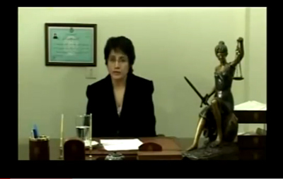

|
|
راي دادگاه حجاب نسرين ستوده اعلام شد
سه شنبه30 فروردین 1390
تغییر برای برابری - به دنبال تشكيل سه جلسه دادگاه برای نسرین ستوده به
اتهام تظاهر به بی حجابی سرانجام شعبه 26 دادگاه انقلاب راي به محكوميت نسرين ستوده داد و او را مجرم شناخت.
بر اساس حکم صادر شده وي به پرداخت جمعا 500000 ريال معادل پنجاه هزار تومان محكوم شده است كه براساس اعلاميه ارسالي از طرف دادگاه قابل اعتراض است.

اتهام تظاهر به بی حجابی به دلیل عدم رعایت حجاب رسمی نسرین ستوده در پیام ویدئویی او اعلام شد. نسرین ستوده به دلیل ممنوع الخروجی نتوانسته بود در مراسم اهدای جایزه حقوق بشر ایتالیا حاضر شود و به همین دلیل پیام ویدئوی اش را برای پخش در مراسم ارسال کرده بود.
پيش از اين در برخی خبرها به اشتباه پنج سال از 11 سال حکم زندان برای
نسرین ستوده را به اتهام اخیر او در مورد بی حجابی نسبت داده بودند در
حالی كه اساسا حکم آن اعلام نشده بود.